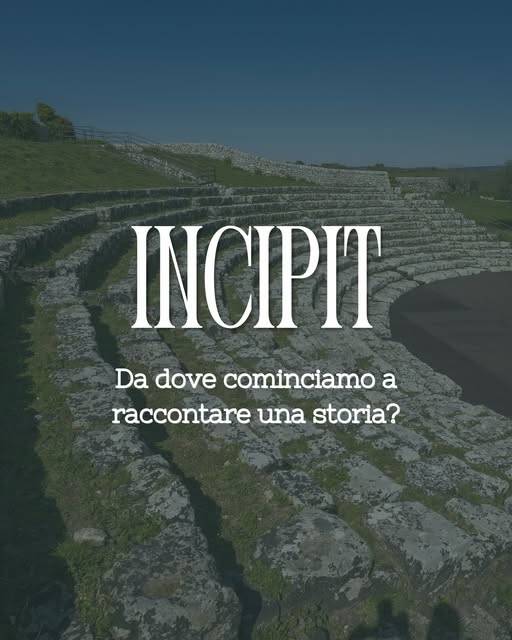
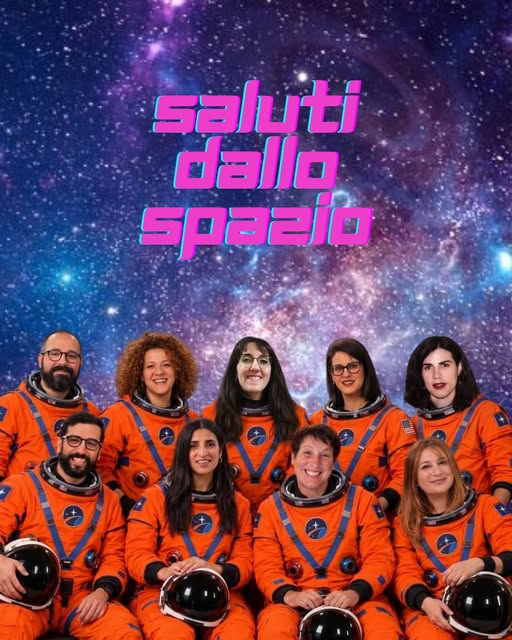
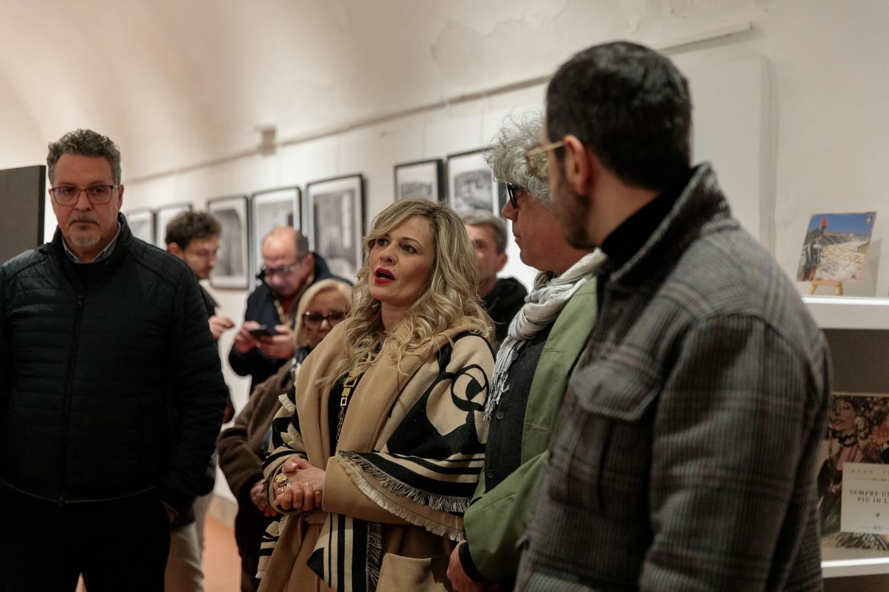
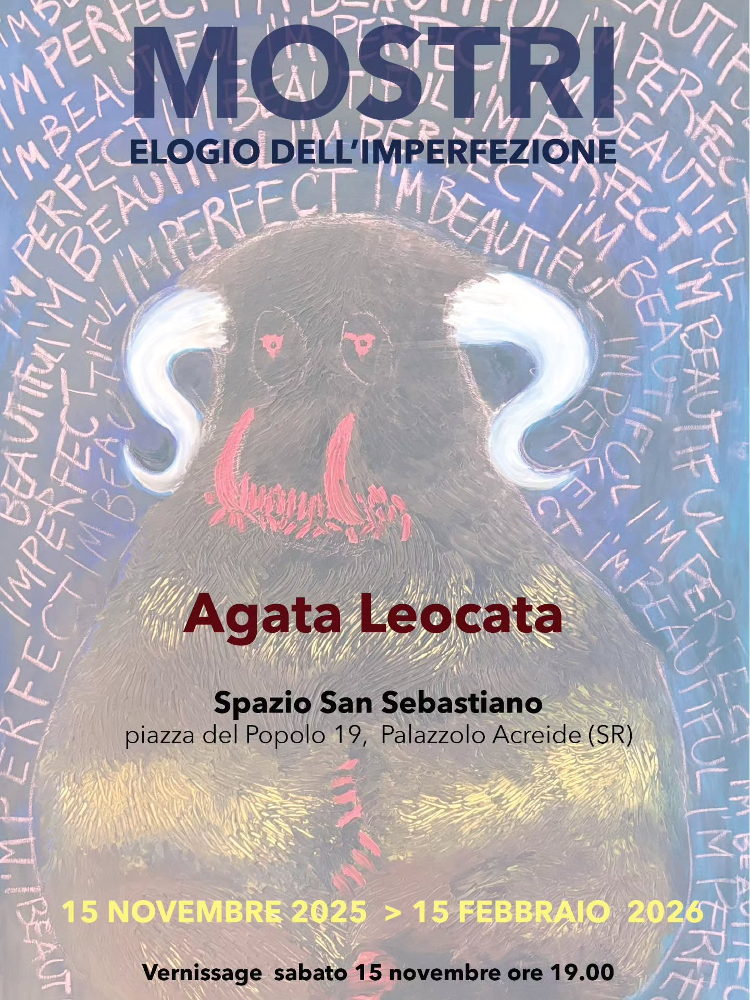

Mediblei APS
@mib_mediblei
Libri, arte e cultura nel cuore degli Iblei.
Mostre, incontri e percorsi alla scoperta del territorio.
Uno spazio di comunità a Palazzolo Acreide.
Post





@mib_mediblei
Libri, arte e cultura nel cuore degli Iblei.
Mostre, incontri e percorsi alla scoperta del territorio.
Uno spazio di comunità a Palazzolo Acreide.



